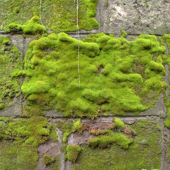

JENIS JENIS TUMBUUHAN
1. Herba
Herba merupakan tumbuhan kecil/pendek yang memiliki batang yang banyak mengandung air dan tidak
mempunyai kayu. Contoh tumbuhan herba adalah kemangi, lavender, kangkung dan sawi.
2. Perdu/Semak
Ini adalah pohon berkayu yang memiliki cabang/ranting, namun tidak memiliki batang yang tegak.
Perdu berukuran kecil dan biasanya dekat dengan permukaan tanah. Contoh tumbuhan ini adalah mawar, melati,
kumis kucing dan cabai.
3. Pohon
adalah tumbuhan berkayu yang memiliki akar, batang dan daun dengan bentuk yang jelas.
Biasanya pohon hidup selama bertahun-tahun, bahkan ada yang ratusan tahun.
Contohnya pohon yang berkanopi seperti beringin, jati, cendana dan pohon mangga.
4. Hidrofit
Merupakan tumbuhan yang hidup di kawasan perairan. Karakteristik tumbuhan hidrofit,
yakni berdaun lebar dan tipis, batangnya berongga, serta punya akar serabut dan stomata.
Contohnya tanaman bakau, eceng gondok, teratai, dan kangkung air.
5. Higrofit
Jenis tumbuhan ini menyukai lingkungan yang lembab. Karakteristiknya, antara lain berdaun lebar dan tipis, mempunyai banyak stomata untuk mempercepat penguapan (transpirasi), serta memiliki lapisan kutikula (lilin) yang tipis. Contohnya lumut, kemunting, dan paku.
